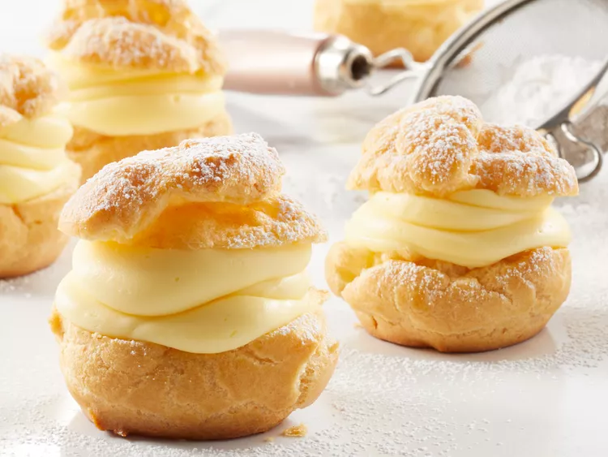

Choux Cream

Descripton
These homemade choux creams are made with a light choux pastry that puffs
up when baked. In this version, they are filled with a creme patissiere
that's easy to make and is on top of the recipes list. You can add melted
chocolate on top for a much better experience.
Ingredients
- 1 recipe of cream Patissiere
- ½ cup butter
- 1 cup water
- ¼ teaspoon salt
- 1 cup all-purpose flour
- 4 large eggs
- 1 bar melted chocolate (optional)
Steps
- Preheat oven to 425 degrees F (220 degrees C).
- In a large pot, bring water and butter to a rolling boil.
- Stir in flour and salt until the mixture forms a ball.
-
Transfer the dough to a large mixing bowl. Using a wooden spoon or stand
mixer, beat in the eggs one at a time, mixing well after each.
-
Drop by tablespoonfuls onto an ungreased baking sheet, spacing them a
couple of inches apart.
-
Bake for 20 to 25 minutes in the preheated oven, until golden brown.
Centers should be dry.
-
When the shells are cool, either split and fill them with the pudding
mixture, or use a pastry bag to pipe the creme patissiere into the
shells.
- Dip the top of the choux cream in melted chocolate (optional)